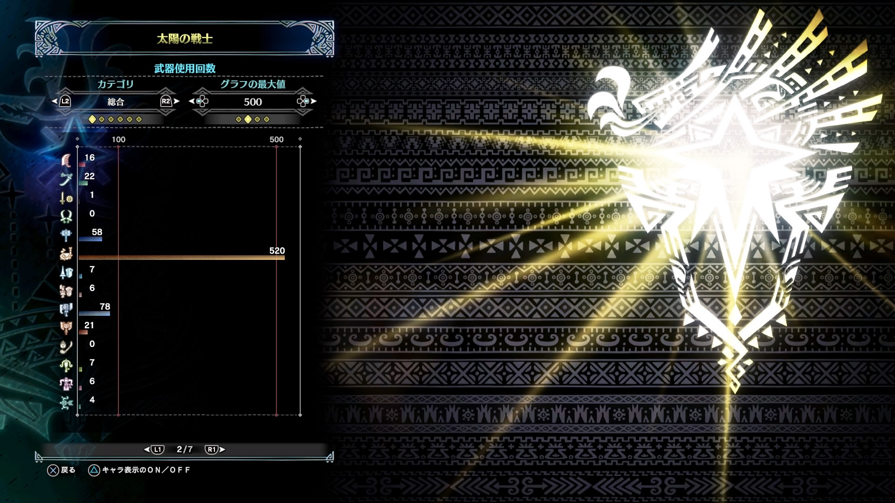
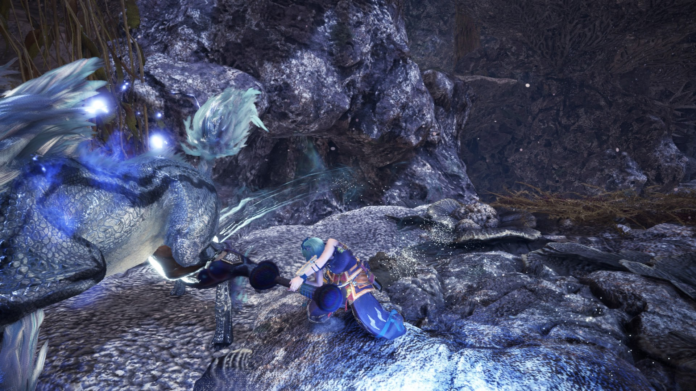
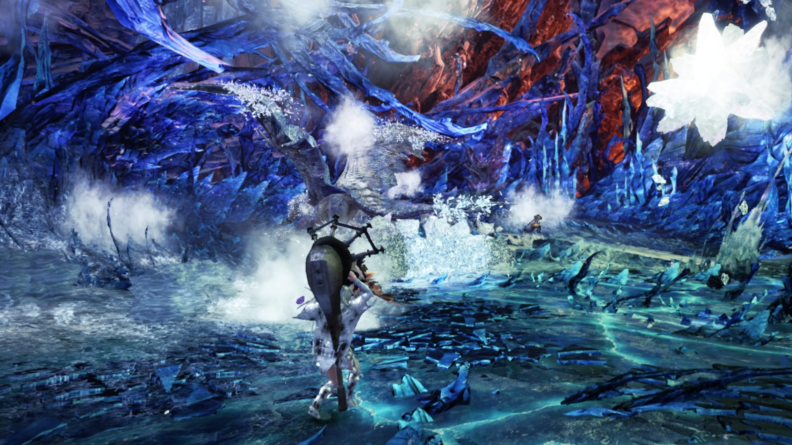
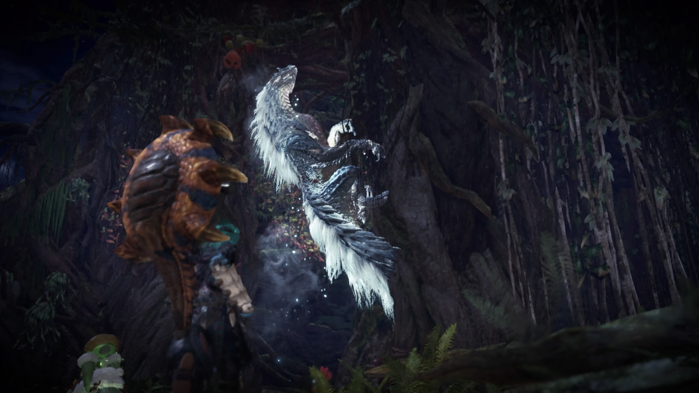

Haruki's Site
Top
Profile
Game
Novel
MonsterHunter

最初に狩猟笛を使ってストーリーをクリアしてしまったが為に他の武器の生産やその武器にあった装備の作成が遅れ、結局狩猟笛ばかりを使ってしまう。
まあ狩猟笛を使うのが好きだから問題はないのだけれど。



基本的にソロプレイが多いのでギルドカードが集まらない。マルチプレイに慣れるのはまだまだ先が長そうだ。